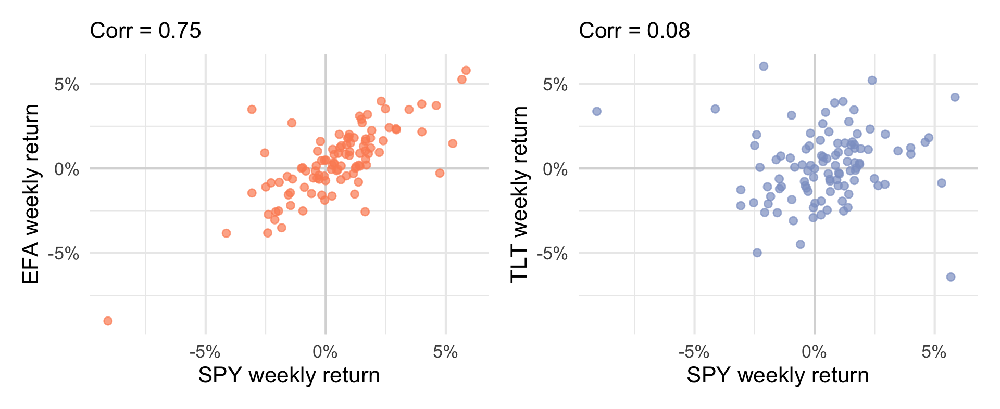
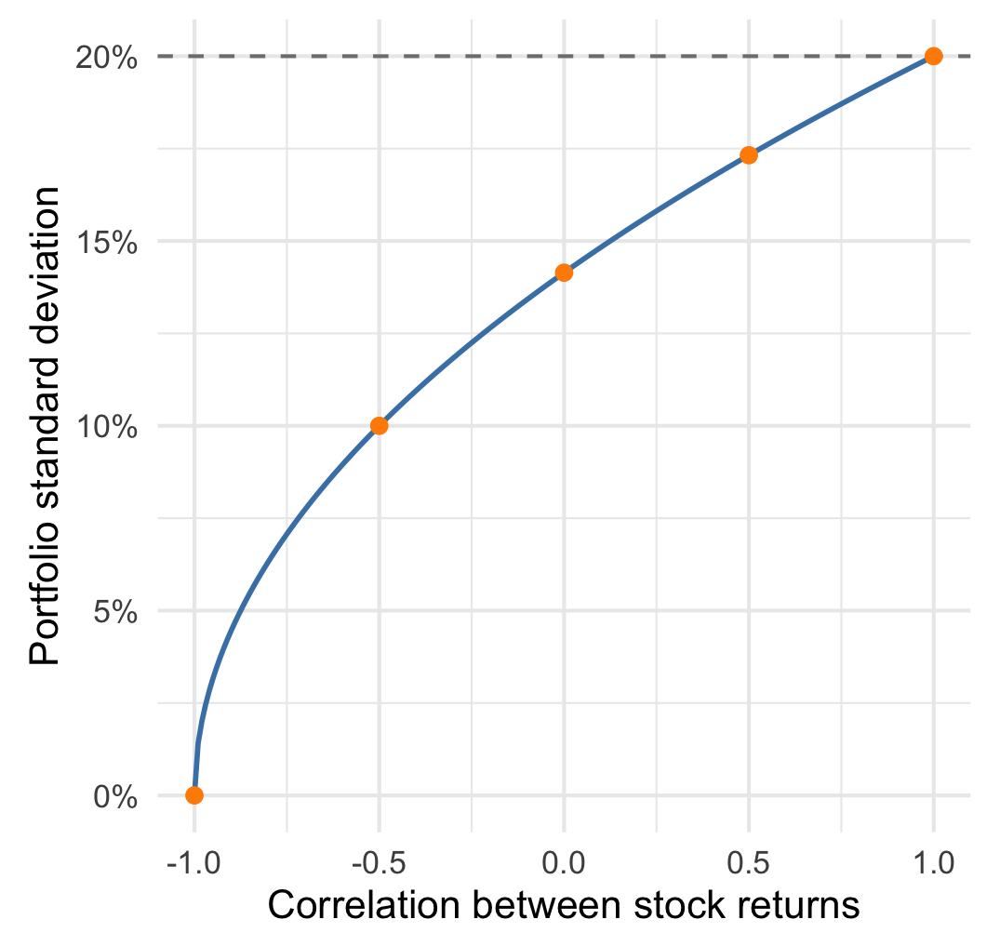
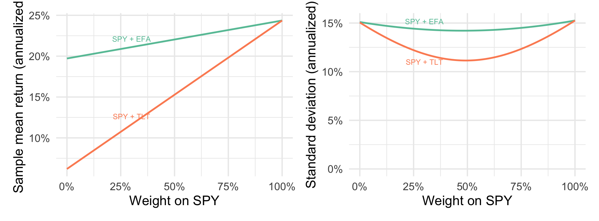
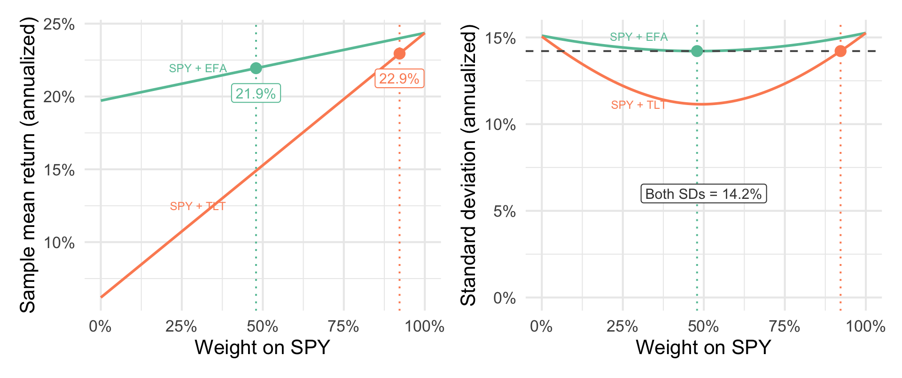
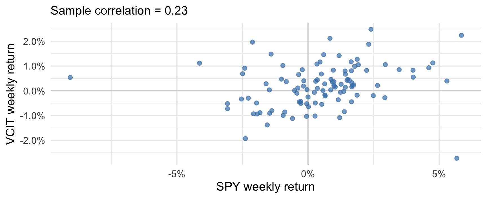
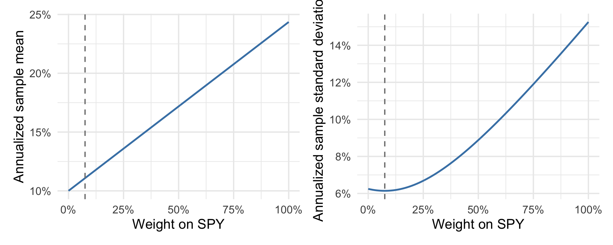
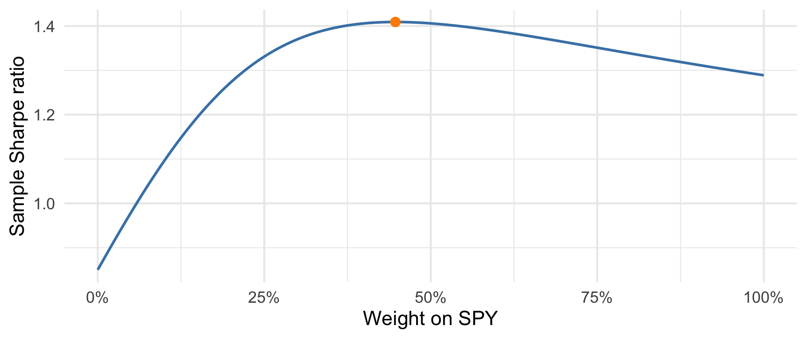

| Fund | Holds | Mean | SD |
|---|---|---|---|
| SPY | U.S. stocks (S&P 500) | 24.4% | 15.3% |
| EFA | Developed-market stocks | 19.7% | 15.1% |
| TLT | Long-term U.S. Treasuries | 6.2% | 15.1% |
TEMBA Statistics 2026
The three-fund data contain 104 weekly returns. Each ETF holds a basket of assets. The means and SDs below are annualized sample summaries.
| Fund | Holds | Mean | SD |
|---|---|---|---|
| SPY | U.S. stocks (S&P 500) | 24.4% | 15.3% |
| EFA | Developed-market stocks | 19.7% | 15.1% |
| TLT | Long-term U.S. Treasuries | 6.2% | 15.1% |
You currently hold only SPY. Would you add EFA or TLT? What information would help you decide?
Suppose SPY returns 2% and EFA returns 1% in a week. You invest 60% in SPY and 40% in EFA.
| Fund | Weight | Weekly return | Contribution |
|---|---|---|---|
| SPY | 0.60 | 0.02 | 0.012 |
| EFA | 0.40 | 0.01 | 0.004 |
| Portfolio | 1.00 | 0.016 |
The portfolio earns 1.6%. Its return is the weighted average of the two fund returns.
A linear combination has the form
\[ Z=aX+bY+c. \]
\(X\) and \(Y\) are random variables; \(a\), \(b\), and \(c\) are fixed numbers. The weights \(a\) and \(b\) scale the two variables, and \(c\) shifts their combination.
Let \(R_{\mathrm{SPY}}\) and \(R_{\mathrm{EFA}}\) denote the two fund returns, and let \(w\) be the fraction invested in SPY.
\[ \begin{aligned} R_p &= wR_{\mathrm{SPY}}+(1-w)R_{\mathrm{EFA}}\\ &= 0.60R_{\mathrm{SPY}}+0.40R_{\mathrm{EFA}}\\ &= 0.60(0.02)+0.40(0.01)\\ &= 0.016. \end{aligned} \]
Here \(a=w\), \(b=1-w\), and \(c=0\). The last two lines use the illustrative week’s returns.
Let \(R\) be revenue, \(V\) variable costs, and \(F\) fixed costs. Revenue and variable costs are random; \(F\) is a fixed amount.
\[ \begin{aligned} \text{Profit} &= \text{Revenue}-\text{Variable costs}-\text{Fixed costs}\\ P &= R-V-F\\ &= 1\,R+(-1)\,V-F. \end{aligned} \]
Here \(a=1\), \(b=-1\), and \(c=-F\). For example, in thousands of dollars,
\[ P=1{,}000-600-100=300. \]
For finite expected values,
\[ E[aX+bY+c]=aE[X]+bE[Y]+c. \]
The rule holds whether or not the variables are independent. Expected profit is therefore
\[ E[P]=E[R]-E[V]-F. \]
Apply the same weights to the expected values, then add the fixed amount.
Use the annualized sample means as estimates of expected returns:
| SPY | EFA | TLT |
|---|---|---|
| 24.4% | 19.7% | 6.2% |
\[ \begin{aligned} E[R_p]&=wE[R_{\mathrm{SPY}}]+(1-w)E[R_{\mathrm{other}}]. \end{aligned} \]
What happens to expected return if you move some of your investment from SPY into EFA or TLT? Calculate it for a 60/40 allocation to each pair.
| Portfolio | Estimated expected return |
|---|---|
| All SPY | 24.4% |
| 60% SPY + 40% EFA | 22.5% |
| 60% SPY + 40% TLT | 17.1% |
Adding either fund reduces estimated expected return. Why might we choose to do that?
What would we need to know about the variability of the combined return?

Revise your choice if needed. Refer to the relationship visible in each plot.
For finite variances,
\[ \operatorname{Var}(aX+bY+c) =a^2\operatorname{Var}(X)+b^2\operatorname{Var}(Y)+2ab\operatorname{Cov}(X,Y). \]
Each variance receives a squared weight. The covariance term accounts for joint movement; the constant does not change spread.
Zero covariance removes the cross term. Independence is sufficient, but is not required. Take the square root to obtain standard deviation.
\[ \begin{aligned} \operatorname{Var}(R_p)={}&w^2\operatorname{Var}(R_1)\\ &+(1-w)^2\operatorname{Var}(R_2)\\ &+2w(1-w)\operatorname{Cov}(R_1,R_2). \end{aligned} \]
For nonnegative weights, higher covariance increases portfolio variability. Standard deviation measures variation in returns, including both gains and losses.

Two stocks each have annual SD 20%. An equal-weight portfolio has
\[ \operatorname{SD}(R_p)=\sqrt{0.02+0.02\rho}, \]
where \(\rho\) is the correlation between their returns.
Correlation below 1 reduces portfolio SD. Negative correlation is not required.

The minimum annualized sample SD is 14.2% with EFA and 11.1% with TLT.
Take the minimum risk attainable with SPY + EFA: annualized SD 14.2%.
At that same risk, which portfolio offers the higher expected return: SPY + EFA or SPY + TLT?
Use the historical sample means as estimates of expected returns for this comparison.
| Portfolio | SPY weight | Sample mean | SD |
|---|---|---|---|
| SPY + EFA | 47.9% | 21.9% | 14.2% |
| SPY + TLT | 92.2% | 22.9% | 14.2% |
At the same risk, SPY + TLT has an annualized sample mean 1.0 percentage points higher.

The marked weights are 47.9% SPY with EFA and 92.2% SPY with TLT. Both have the same SD; the TLT mix has the higher sample mean.
VCIT holds intermediate-term investment-grade corporate bonds.

The funds differ in their individual variability as well as in how they move together.
| Fund | Mean | SD |
|---|---|---|
| SPY | 24.4% | 15.3% |
| VCIT | 10.0% | 6.2% |
The mean and standard deviation are annualized sample summaries. For each allocation, we apply the same weights every week, before trading costs.

The lowest sample SD occurs at 7.5% SPY. Choosing this weight does not use either fund’s mean return.
A portfolio has expected annual return 8%, annual SD 12%, and an annual risk-free benchmark of 3%.
How much expected return does it offer above the benchmark, per unit of standard deviation?
If the benchmark rises to 4%, which input to that comparison changes?
For a positive SD and a constant risk-free return over the same period,
\[ \text{Sharpe ratio}=\frac{E[R_p]-r_f}{\operatorname{SD}(R_p)}. \]
The numerator is expected return above the benchmark. The ratio expresses that excess return per unit of variability.
For the example, \((0.08-0.03)/0.12\approx0.417\). With a 4% benchmark it becomes about 0.333.
We use sample means and SDs, with the sample-average Treasury-bill rate of 4.7% annualized as a constant benchmark.

The maximizing allocation holds 44.7% SPY in this sample.
One analyst recommends 7.5% SPY; another recommends 44.7% SPY.
What objective would you ask each analyst to state?
Would a higher risk-free benchmark change the allocation with minimum SD? Could it change the allocation with maximum Sharpe ratio?
| Allocation | SPY weight | Mean | SD | Sharpe |
|---|---|---|---|---|
| All VCIT | 0.0% | 10.0% | 6.2% | 0.85 |
| Minimum SD | 7.5% | 11.1% | 6.1% | 1.04 |
| Maximum sample Sharpe | 44.7% | 16.4% | 8.3% | 1.41 |
| All SPY | 100.0% | 24.4% | 15.3% | 1.29 |
Minimum SD uses variances and covariance. Maximum sample Sharpe also uses mean returns and the benchmark.
These weights optimize the same sample used to report performance; they do not establish the best future allocation.
Revenue has SD 200 and variable costs have SD 120, in thousands of dollars. Their correlation is 0.6.
Which expression gives the variance of revenue minus variable costs?
\[ \begin{aligned} A:&\quad 200^2+120^2+2(0.6)(200)(120)\\ B:&\quad 200^2+120^2-2(0.6)(200)(120). \end{aligned} \]
Explain the effect of positive correlation here, then calculate the profit SD.
When revenue and costs rise together, part of their movement cancels in profit. The weights are 1 and \(-1\), so B applies.
\[ \operatorname{Var}(X-Y)=25{,}600,\qquad \operatorname{SD}(X-Y)=160. \]
The profit SD is $160,000. Subtracting a fixed cost changes mean profit but leaves this SD unchanged.